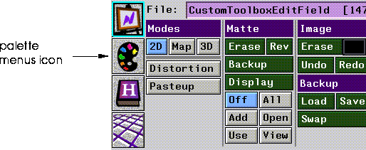

[N-World Contents] [Book Contents] [Prev] [Next] [Index]
Customizing N-Paint Elements
N-Paint provides you with a rich palette of predefined brush textures to choose from. You can also create your own custom brush textures for unique 2D effects.
In This Chapter
You'll learn how to:
Creating a Custom Brush Texture
In Chapters 1 and 2 we created a scene with a samurai against a backdrop of moonlight and stone. Now, we'll revisit that scene to add the finishing touch; stars in the evening sky. As is the case with many N-Paint operations, there is more than one approach to this task.
In the next section, you'll learn how to create your own brush texture, which you can use in conjunction with the brush and a color ink to quickly and easily add a field of stars to the background of the image.
Creating a Matte for a Brush Texture
Brush textures are basically opacity mattes, seperate from an images alpha channel, which modify the pattern in which ink is applied to the canvas. Think of texture opacity mattes as local mattes placed between the brush and the canvas.
Brush textures work like mattes, so any matte image can be used to create a brush texture. In this case, we'll start with a fresh new image and create the matte we need.
1. (CLICK-L) on File:>Create New.
- Fill in the Create New Image dialog with a path and filename for the new image. Specify 720 for both width and 486 for height, then (CLICK-L) on Do It.
- Note: The size of the canvas doesn't matter if you want to use your brush texture with Random or Dragged offsets. However, if you wish to use your brush with a Tiled offset, it must be at least as large as the image you're using it on. 720x486 is a standard video resolution, so it's a good standard dimension to choose.
2. Select the Brush tool.
3. Select the Color ink.
- If you're using a different color, choose white.
- We're going to create a random starfield with two sizes of star. For the first group, set the brush Size to about 4, Hard to about 40%. Paint a few stars on a portion of the image.
Figure 5.1 The first stars in the star field
4. Set size to 2 and create several more smaller stars.
- When you've finished your image should look something like this:
Figure 5.2 More stars
5. (CLICK-L) on the cutout brush in the tool box.
Figure 5.3 The cutout brush
- The cutout brush parameters menu appears:
Figure 5.4 Cutout brush parameters
6. Select the pattern ink.
- The Pattern ink parameters menu appears:
Figure 5.5 Pattern ink parameters
7. (CLICK-L) on the Tile checkbox in the Pattern ink parameters menu.
8. (CLICK-L) on Create Cutout in the Cutout Brush parameters section.
- The Create Cutout pop-up menu appears:
Figure 5.6 The Create Cutout pop-up menu
9. (CLICK-L) on Using Rectangle.
10. Draw a rectangle around the stars, and (CLICK-L) again.
- This creates the cutout pattern, which the pattern ink will tile across the canvas.
11. Press and hold the left mouse button, then drag the cutout brush across the canvas.
- Your starfield pattern should now cover the canvas, like this:
Figure 5.7 The canvas covered with the star field
If you like, you can use the round brush again to add more stars and make the overall pattern a little more random.
12. (CLICK-L) on Add and View in the matte modes section of the menu.
13. Select the Quad tool and the Swap RGBA ink.
- The Swap RGBA ink allows you to transfer the contents of one of the four channels of the image into another channel.

Figure 5.8 The Swap RGBA parameters
14. (CLICK-L) on the Red gets field, and select Red from the resulting pop-up menu.
- Repeat this process for all four channels, so that all four are being replaced by the contents of the Red channel, as shown in Figure 5.8.
15. (CLICK-L) on Do Full Canvas in the Quad Tool parameters section of the menu.
- Copying the red channel into the green, blue, and then the red channel creates a matte that matches exactly any non-black areas of the image.
- If the matte does not appear, make sure that the matte is in Add and View modes. If it isn't, (CLICK-L) on Undo, set the matte modes, then (CLICK-L) on Redo.
16. (CLICK-L) on File: field, then (CLICK-L) on Save Matte.
- Save the matte to memory (or to file if you want a permanent copy).
17. Load the following image file:
/usr/local/ngc/demo/images/hero-twilight.rgba
18. Select the Brush tool.
19. Select the Color ink.
20. (CLICK-L) on the Texture>Use Texture in the Texture options section of the menu.
21. (CLICK-L) on Image in the Texture options section of the menu.
- A list of single-component images currently loaded into memory appears. (CLICK-L) on the matte star image you just created.
22. (CLICK-L) on Texture>Offset>Tiled in the Texture options section of the menu.
23. (CLICK-L) on Track>Continuous in the Options section of the menu.
24. Make sure that Use and View are selected in the matte modes section of the menu.
25. Paint on the image with the Brush.
- Your background is filled with stars as you drag the brush across the canvas!
26. Save your completed image
- Here's what our image looked like after we added our star field.
Figure 5.9 The hero with stars
Experiment With Different Effects
With Texture Offset set to Tiled, the matte image is revealed through the brush in a regular pattern.
Setting the Texture Offset to Random uses a random portion of the matte through which to apply ink. As you move the brush, the random area changes, so your brush appears very "active," resulting in an effect like Figure 5.10:
Figure 5.10 Drawing with random texture offset
Setting the Texture Offset to Dragged prevents the texture in the brush from changing. The result is something like this:

Figure 5.11 Drawing with the dragged Texture Offset
Using Shadow Effects
Using shadow effects in conjunction with custom brush textures opens up an almost infinite range of possibilities for using textured brushes.
To set shadow parameters:
1. (CLICK-L) on the Shadow checkbox in the Drawing Parameters section.
2. (CLICK-L) on Set to adjust shadow parameters.
- The Specify Shadow Parameters menu appears:
Figure 5.12 The Specify Shadow Parameters menu
Experiment with different values for these parameters. By combining shadow parameters with custom textures, you can quickly and easily achieve almost any brush texture.
Creating a Custom Palette
The standard N-Paint palette contains 48 colors and 208 empty color slots. Frequently, you'll want to create and use palettes that contain colors all your own. You can create custom colors, build palettes from colors in the current image, save your palettes to disk, open them, and select from among several palettes loaded into memory.
Palette Structure
Figure 5.13 shows the basic components of the palette:
Figure 5.13 Anatomy of a palette
Creating a Custom Color
You can create a custom color easily by editing an existing color. For example, to create a custom shade of green:
1. (CLICK-L) on the Palette Menus icon in the Commands section of the N-Paint menu.

Figure 5.14 The Palette Menus icon
2. (CLICK-L) on a shade of green that looks close to the shade you hope to end up with.
3. Using the IHS sliders, adjust the intensity, hue, and saturation of the current color.
- You can create a wide range of colors using these sliders. The color is displayed in the current color box at the right side of the palette.
4. When the color looks the way you like, use the paging controls to expose an empty palette slot.
- (CLICK-L) on the downward arrow to display an empty palette row.
Figure 5.15 Empty palette slots
5. (CLICK-L) on one of the empty slots.
- The current color is copied into that slot!
Saving your Custom Palette
Now that you've added a custom color to your palette, you can save it to file in case you want to use it again later.
To save your palette:
1. (CLICK-L) on the magenta Palette field.
- The Palette operations menu appears:
Figure 5.16 Palette operations
2. (CLICK-L) on Save As.
- Use the dialog box to specify a name and directory for your palette. When you've done so, (CLICK-L) on Save.
Creating a New Palette
To create a new palette:
1. (CLICK-L) on the Palette Field, then (CLICK-L) on Create New.
- Enter a directory and name for yourpalette in the appropriate fields, then (CLICK-L) on Do It.
Deleting a Color
To delete a color from the palette:
1. (CLICK-R) on the slot.
- The color in the slot disappears.
Creating a Palette Row
In this short example, we'll place colors at either end of a palette row, then let N-Paint create a gradient of colors between them.
1. Using the sliders, adjust the current color until it is black.
- (DRAG-L) the sliders all the way to the left.
2. (CLICK-L) on the leftmost slot in the empty palette row.
3. Using the Intensity slider, adjust the current color until it is white.
- (DRAG-L) the Intensity slider all the way to the right, but leave the Hue and Saturation sliders all the way to the left.
4. (CLICK-L) on the rightmost slot in the empty palette row.
Your palette row now has two different colors at opposite ends, similar to the one shown in Figure 5.17
Figure 5.17 The two new colors
5. Place the cursor in the middle of the row and (CLICK-M).
- N-Paint automatically fills in the row with the intermediate colors!
Figure 5.18 The new interpolated row
Creating a Palette from the Colors in an Image
You can also create a palette that contains the colors in a portion of the current image, which you can specify. To do so,
1. (CLICK-L) on the Palette field, then (CLICK-L) on Create New.
- Enter a name for your new palette in the dialog box.
2. (CLICK-L) on the Color Picker tool.
- The Color Picker parameters menu appears:
Figure 5.19 Color Picker tool parameters menu
3. (CLICK-L) on Get Canvas Colors.
- Using the cursor, (CLICK-L) on two points to create a rectangle of the area of the canvas from which you want to create a palette.
4. (CLICK-L) on another tool (such as the brush tool) to reveal the commands menu again.
5. Save your palette.
Congratulations!
You now know how to create custom brush textures and custom palettes. Customization in N-Paint is simple and easy, and it offers a way for you to increase your productivity with a minimum of extra effort.
[N-World Contents] [Book Contents] [Prev] [Next] [Index]
 Another fine product from Nichimen documentation!
Another fine product from Nichimen documentation!
Copyright © 1996, Nichimen Graphics Corporation. All rights
reserved.